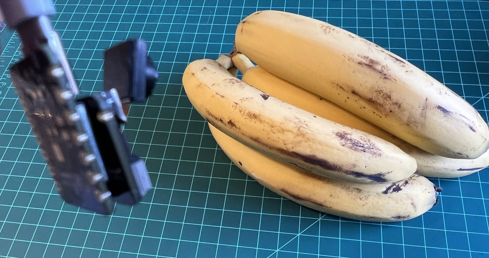

Image Classification

Introduction
More and more, we are facing an artificial intelligence (AI) revolution where, as stated by Gartner, Edge AI has a very high impact potential, and it is for now!

At the forefront of the Emerging Technologies Radar is the universal language of Edge Computer Vision. When we delve into Machine Learning (ML) applied to vision, the first concept that greets us is Image Classification, a kind of ML’ Hello World ’ that is both simple and profound!
The Seeed Studio XIAO ESP32S3 Sense is a powerful tool that combines camera and SD card support. With its embedded ML computing power and photography capability, it is an excellent starting point for exploring TinyML vision AI.
A TinyML Image Classification Project - Fruits versus Veggies

The whole idea of our project will be to train a model and proceed with inference on the XIAO ESP32S3 Sense. For training, we should find some data (in fact, tons of data!).
But first of all, we need a goal! What do we want to classify?
With TinyML, a set of techniques associated with machine learning inference on embedded devices, we should limit the classification to three or four categories due to limitations (mainly memory). We will differentiate apples from bananas and potatoes (you can try other categories).
So, let’s find a specific dataset that includes images from those categories. Kaggle is a good start:
https://www.kaggle.com/kritikseth/fruit-and-vegetable-image-recognition
This dataset contains images of the following food items:
- Fruits - banana, apple, pear, grapes, orange, kiwi, watermelon, pomegranate, pineapple, mango.
- Vegetables - cucumber, carrot, capsicum, onion, potato, lemon, tomato, radish, beetroot, cabbage, lettuce, spinach, soybean, cauliflower, bell pepper, chili pepper, turnip, corn, sweetcorn, sweet potato, paprika, jalepeño, ginger, garlic, peas, eggplant.
Each category is split into the train (100 images), test (10 images), and validation (10 images).
- Download the dataset from the Kaggle website and put it on your computer.
Optionally, you can add some fresh photos of bananas, apples, and potatoes from your home kitchen, using, for example, the codediscussed in the setup lab.
Training the model with Edge Impulse Studio
We will use the Edge Impulse Studio to train our model. As you may know, Edge Impulse is a leading development platform for machine learning on edge devices.
Enter your account credentials (or create a free account) at Edge Impulse. Next, create a new project:

Data Acquisition
Next, on the UPLOAD DATA section, upload from your computer the files from chosen categories:

It would be best if you now had your training dataset split into three classes of data:

You can upload extra data for further model testing or split the training data. I will leave it as it is to use the most data possible.
Impulse Design
An impulse takes raw data (in this case, images), extracts features (resize pictures), and then uses a learning block to classify new data.
Classifying images is the most common use of deep learning, but a lot of data should be used to accomplish this task. We have around 90 images for each category. Is this number enough? Not at all! We will need thousands of images to “teach or model” to differentiate an apple from a banana. But, we can solve this issue by re-training a previously trained model with thousands of images. We call this technique “Transfer Learning” (TL).

With TL, we can fine-tune a pre-trained image classification model on our data, performing well even with relatively small image datasets (our case).
So, starting from the raw images, we will resize them (96x96) pixels and feed them to our Transfer Learning block:

Pre-processing (Feature Generation)
Besides resizing the images, we can change them to Grayscale or keep the actual RGB color depth. Let’s start selecting Grayscale. Doing that, each one of our data samples will have dimension 9, 216 features (96x96x1). Keeping RGB, this dimension would be three times bigger. Working with Grayscale helps to reduce the amount of final memory needed for inference.

Remember to [Save parameters]. This will generate the features to be used in training.
Model Design
Transfer Learning
In 2007, Google introduced MobileNetV1, a family of general-purpose computer vision neural networks designed with mobile devices in mind to support classification, detection, and more. MobileNets are small, low-latency, low-power models parameterized to meet the resource constraints of various use cases.
Although the base MobileNet architecture is already tiny and has low latency, many times, a specific use case or application may require the model to be smaller and faster. MobileNet introduces a straightforward parameter α (alpha) called width multiplier to construct these smaller, less computationally expensive models. The role of the width multiplier α is to thin a network uniformly at each layer.
Edge Impulse Studio has MobileNet V1 (96x96 images) and V2 (96x96 and 160x160 images) available, with several different α values (from 0.05 to 1.0). For example, you will get the highest accuracy with V2, 160x160 images, and α=1.0. Of course, there is a trade-off. The higher the accuracy, the more memory (around 1.3M RAM and 2.6M ROM) will be needed to run the model, implying more latency.
The smaller footprint will be obtained at another extreme with MobileNet V1 and α=0.10 (around 53.2K RAM and 101K ROM).
For this first pass, we will use MobileNet V1 and α=0.10.
Training
Data Augmentation
Another necessary technique to use with deep learning is data augmentation. Data augmentation is a method that can help improve the accuracy of machine learning models, creating additional artificial data. A data augmentation system makes small, random changes to your training data during the training process (such as flipping, cropping, or rotating the images).
Under the rood, here you can see how Edge Impulse implements a data Augmentation policy on your data:
# Implements the data augmentation policy
def augment_image(image, label):
# Flips the image randomly
image = tf.image.random_flip_left_right(image)
# Increase the image size, then randomly crop it down to
# the original dimensions
resize_factor = random.uniform(1, 1.2)
new_height = math.floor(resize_factor * INPUT_SHAPE[0])
new_width = math.floor(resize_factor * INPUT_SHAPE[1])
image = tf.image.resize_with_crop_or_pad(image, new_height, new_width)
image = tf.image.random_crop(image, size=INPUT_SHAPE)
# Vary the brightness of the image
image = tf.image.random_brightness(image, max_delta=0.2)
return image, labelExposure to these variations during training can help prevent your model from taking shortcuts by “memorizing” superficial clues in your training data, meaning it may better reflect the deep underlying patterns in your dataset.
The final layer of our model will have 16 neurons with a 10% dropout for overfitting prevention. Here is the Training output:

The result could be better. The model reached around 77% accuracy, but the amount of RAM expected to be used during the inference is relatively tiny (about 60 KBytes), which is very good.
Deployment
The trained model will be deployed as a .zip Arduino library:

Open your Arduino IDE, and under Sketch, go to Include Library and add.ZIP Library. Please select the file you download from Edge Impulse Studio, and that’s it!

Under the Examples tab on Arduino IDE, you should find a sketch code under your project name.

Open the Static Buffer example:

You can see that the first line of code is exactly the calling of a library with all the necessary stuff for running inference on your device.
#include <XIAO-ESP32S3-CAM-Fruits-vs-Veggies_inferencing.h>Of course, this is a generic code (a “template”) that only gets one sample of raw data (stored on the variable: features = {} and runs the classifier, doing the inference. The result is shown on the Serial Monitor.
We should get the sample (image) from the camera and pre-process it (resizing to 96x96, converting to grayscale, and flatting it). This will be the input tensor of our model. The output tensor will be a vector with three values (labels), showing the probabilities of each one of the classes.

Returning to your project (Tab Image), copy one of the Raw Data Sample:

9, 216 features will be copied to the clipboard. This is the input tensor (a flattened image of 96x96x1), in this case, bananas. Past this Input tensor onfeatures[] = {0xb2d77b, 0xb5d687, 0xd8e8c0, 0xeaecba, 0xc2cf67, ...}

Edge Impulse included the library ESP NN in its SDK, which contains optimized NN (Neural Network) functions for various Espressif chips, including the ESP32S3 (running at Arduino IDE).
When running the inference, you should get the highest score for “banana.”

Great news! Our device handles an inference, discovering that the input image is a banana. Also, note that the inference time was around 317ms, resulting in a maximum of 3 fps if you tried to classify images from a video.
Now, we should incorporate the camera and classify images in real time.
Go to the Arduino IDE Examples and download from your project the sketch esp32_camera:

You should change lines 32 to 75, which define the camera model and pins, using the data related to our model. Copy and paste the below lines, replacing the lines 32-75:
#define PWDN_GPIO_NUM -1
#define RESET_GPIO_NUM -1
#define XCLK_GPIO_NUM 10
#define SIOD_GPIO_NUM 40
#define SIOC_GPIO_NUM 39
#define Y9_GPIO_NUM 48
#define Y8_GPIO_NUM 11
#define Y7_GPIO_NUM 12
#define Y6_GPIO_NUM 14
#define Y5_GPIO_NUM 16
#define Y4_GPIO_NUM 18
#define Y3_GPIO_NUM 17
#define Y2_GPIO_NUM 15
#define VSYNC_GPIO_NUM 38
#define HREF_GPIO_NUM 47
#define PCLK_GPIO_NUM 13Here you can see the resulting code:

The modified sketch can be downloaded from GitHub: xiao_esp32s3_camera.
Note that you can optionally keep the pins as a .h file as we did in the Setup Lab.
Upload the code to your XIAO ESP32S3 Sense, and you should be OK to start classifying your fruits and vegetables! You can check the result on Serial Monitor.
Testing the Model (Inference)

Getting a photo with the camera, the classification result will appear on the Serial Monitor:

Other tests:


Testing with a Bigger Model
Now, let’s go to the other side of the model size. Let’s select a MobilinetV2 96x96 0.35, having as input RGB images.

Even with a bigger model, the accuracy could be better, and the amount of memory necessary to run the model increases five times, with latency increasing seven times.
Note that the performance here is estimated with a smaller device, the ESP-EYE. The actual inference with the ESP32S3 should be better.
To improve our model, we will need to train more images.
Even though our model did not improve accuracy, let’s test whether the XIAO can handle such a bigger model. We will do a simple inference test with the Static Buffer sketch.
Let’s redeploy the model. If the EON Compiler is enabled when you generate the library, the total memory needed for inference should be reduced, but it does not influence accuracy.
⚠️ Attention - The Xiao ESP32S3 with PSRAM enable has enought memory to run the inference, even in such bigger model. Keep the EON Compiler NOT ENABLED.

Doing an inference with MobilinetV2 96x96 0.35, having as input RGB images, the latency was 219ms, which is great for such a bigger model.

For the test, we can train the model again, using the smallest version of MobileNet V2, with an alpha of 0.05. Interesting that the result in accuracy was higher.

Note that the estimated latency for an Arduino Portenta (ou Nicla), running with a clock of 480MHz is 45ms.
Deploying the model, we got an inference of only 135ms, remembering that the XIAO runs with half of the clock used by the Portenta/Nicla (240MHz):

Running inference on the SenseCraft-Web-Toolkit
One significant limitation of viewing inference on Arduino IDE is that we can not see what the camera focuses on. A good alternative is the SenseCraft-Web-Toolkit, a visual model deployment tool provided by SSCMA(Seeed SenseCraft Model Assistant). This tool allows you to deploy models to various platforms easily through simple operations. The tool offers a user-friendly interface and does not require any coding.
Follow the following steps to start the SenseCraft-Web-Toolkit:
- Open the SenseCraft-Web-Toolkit website.
- Connect the XIAO to your computer:
- Having the XIAO connected, select it as below:

Select the device/Port and press
[Connect]:
You can try several Computer Vision models previously uploaded by Seeed Studio. Try them and have fun!
In our case, we will use the blue button at the bottom of the page: [Upload Custom AI Model].
But first, we must download from Edge Impulse Studio our quantized .tflite model.
- Go to your project at Edge Impulse Studio, or clone this one:
- On the
Dashboard, download the model (“block output”):Transfer learning model - TensorFlow Lite (int8 quantized).

- On SenseCraft-Web-Toolkit, use the blue button at the bottom of the page:
[Upload Custom AI Model]. A window will pop up. Enter the Model file that you downloaded to your computer from Edge Impulse Studio, choose a Model Name, and enter with labels (ID: Object):

Note that you should use the labels trained on EI Studio, entering them in alphabetic order (in our case: apple, banana, potato).
After a few seconds (or minutes), the model will be uploaded to your device, and the camera image will appear in real-time on the Preview Sector:

The Classification result will be at the top of the image. You can also select the Confidence of your inference cursor Confidence.
Clicking on the top button (Device Log), you can open a Serial Monitor to follow the inference, the same that we have done with the Arduino IDE:

On Device Log, you will get information as:

- Preprocess time (image capture and Crop): 4ms;
- Inference time (model latency): 106ms,
- Postprocess time (display of the image and inclusion of data): 0ms.
- Output tensor (classes), for example: [[89,0]]; where 0 is Apple (and 1is banana and 2 is potato)
Here are other screenshots:

Conclusion
The XIAO ESP32S3 Sense is very flexible, inexpensive, and easy to program. The project proves the potential of TinyML. Memory is not an issue; the device can handle many post-processing tasks, including communication.
You will find the last version of the codeon the GitHub repository: XIAO-ESP32S3-Sense.